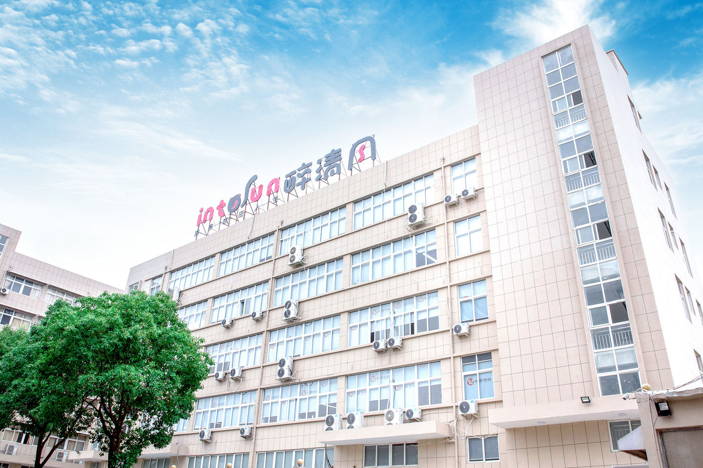
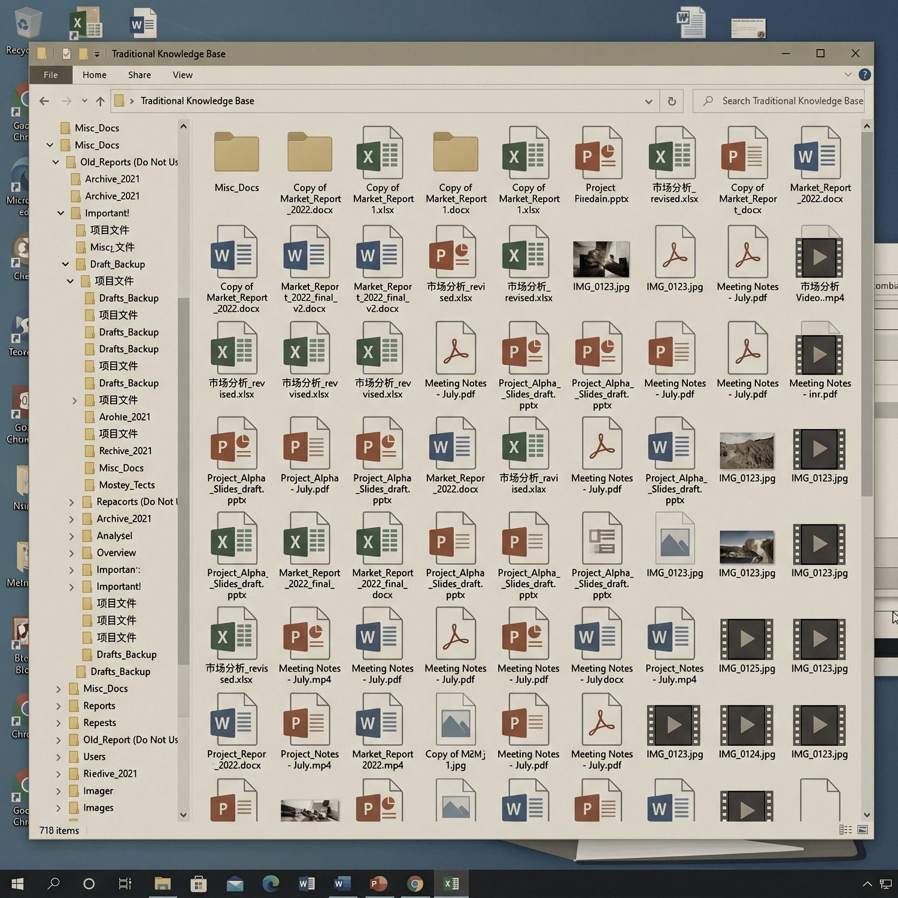
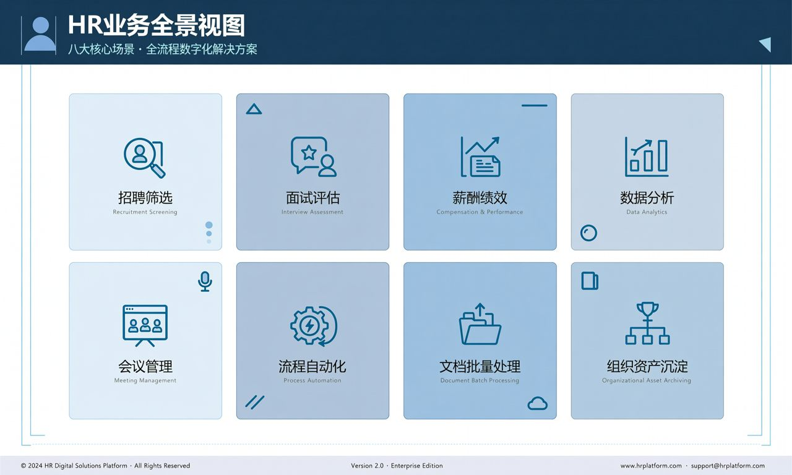
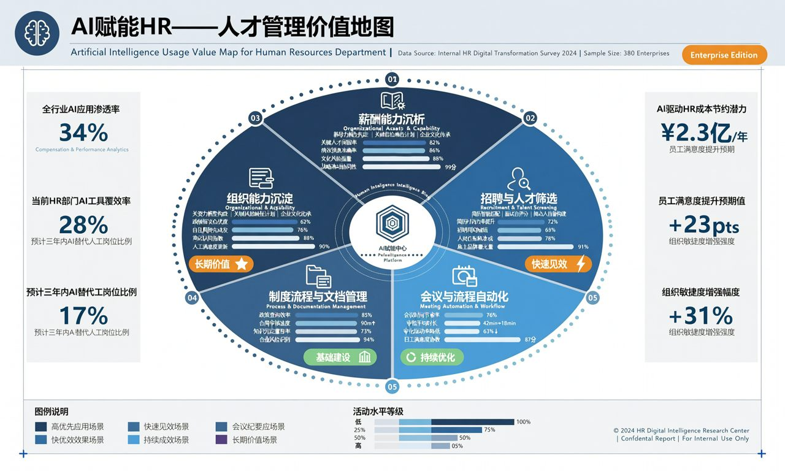
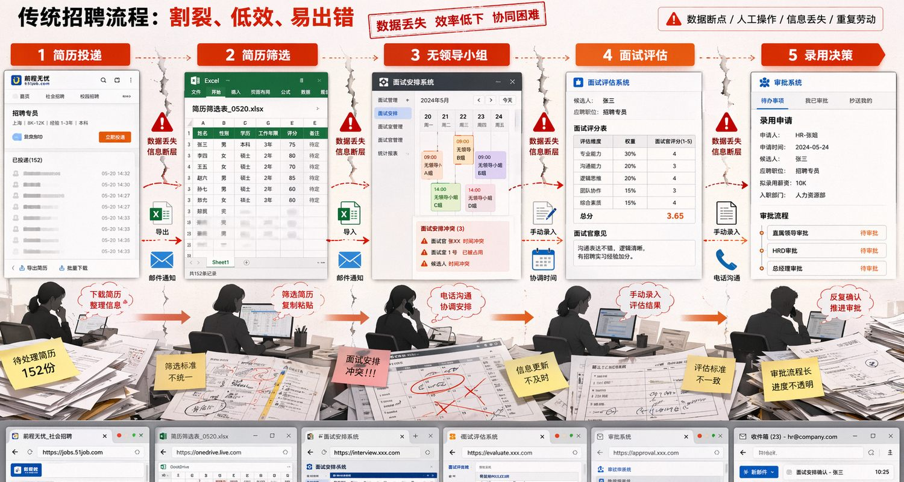
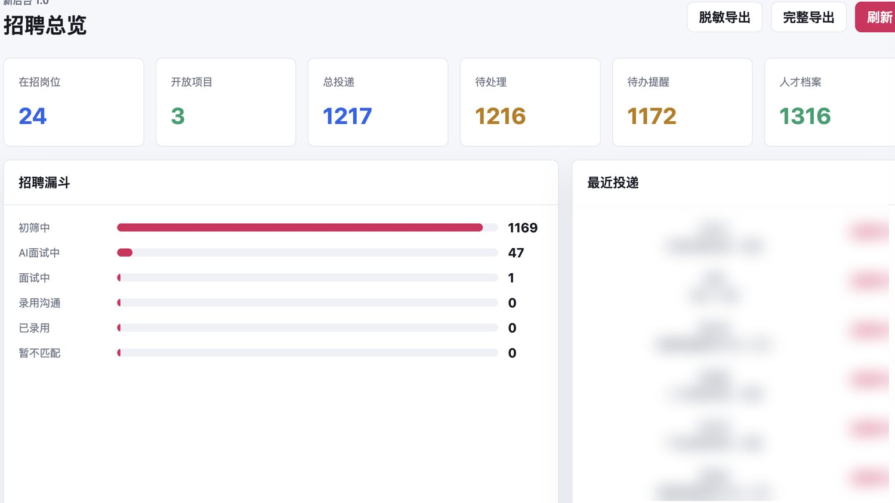
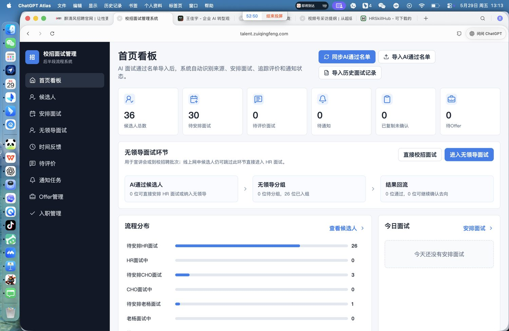
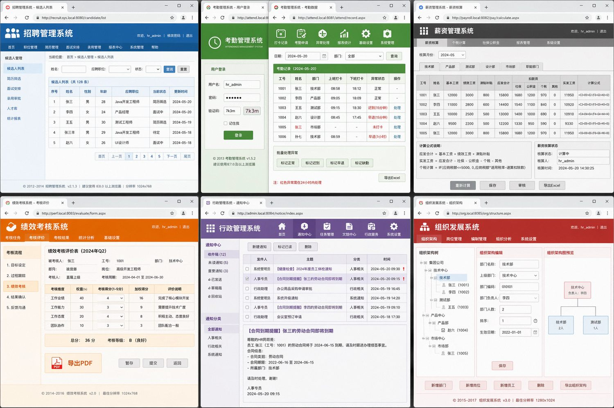
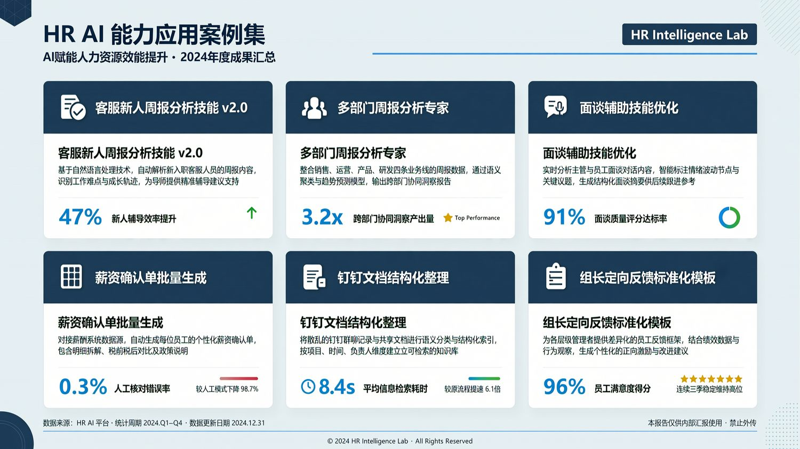
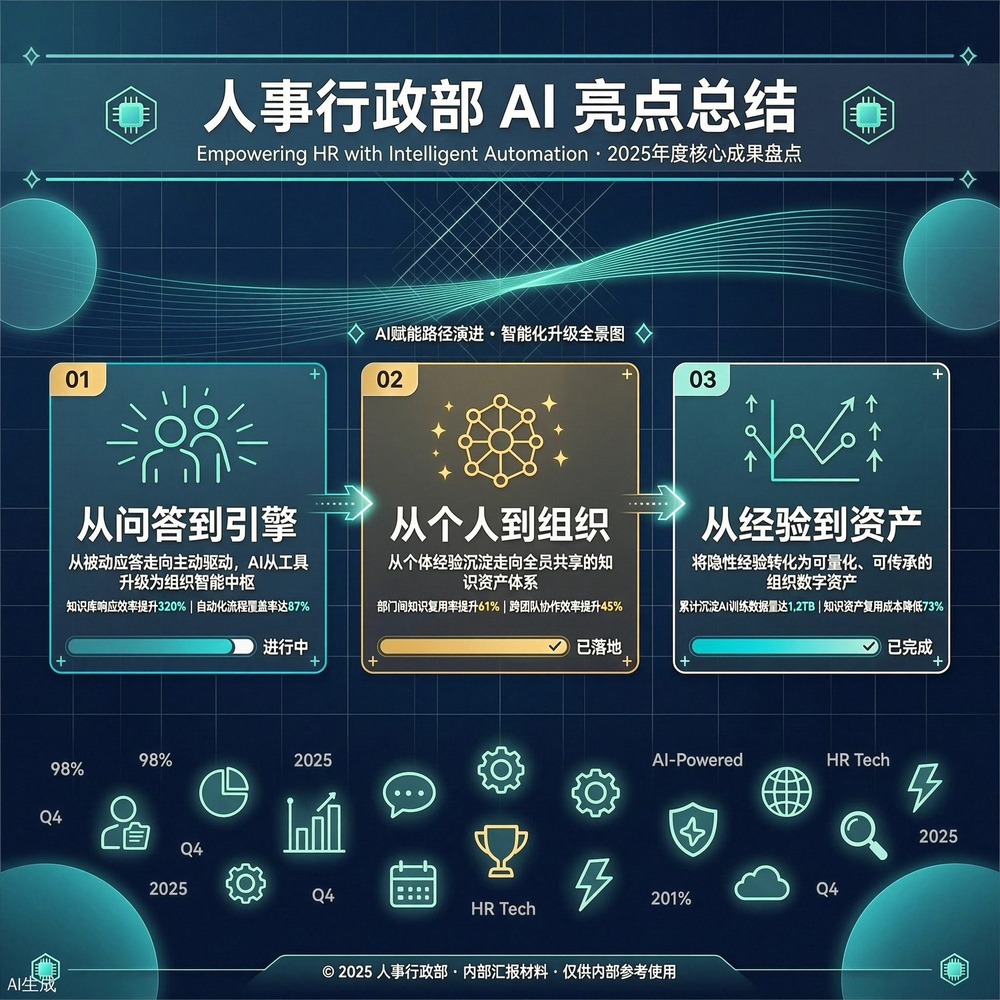

醉清风以千问办公为工具，在知识管理、人才招聘、组织管理等核心场景完成系统性AI落地，围绕六大模块构建Skill体系，将传统HR职能中台升级为AI驱动的智能工作系统。

醉清风 官网上海醉清风健康科技股份有限公司成立于2008年，企业规模超1000人，是一家倡导阳光、健康的两性现代生活理念，致力于两性健康用品的品牌孵化、渠道零售及分销的综合运营商。主营器具类、计生类、服饰类、护理类等全品类两性健康高科技产品。
公司拥有谜姬、霏慕等行业知名自主品牌，具备深厚的自研积累与供应链整合能力，在行业内率先建立规范化运营标准。渠道品牌销售额连续多年国内行业排名领先，业务遍及全国并服务海量消费者与分销商市场。
醉清风以千问办公为工具，在知识管理、人才招聘、组织管理等核心场景完成系统性AI落地。公司以"让HR回归高价值工作"为核心，人力资源部门率先完成千问办公AI工具全量部署，围绕招聘、薪酬、绩效、SSC行政、组织发展、知识库六大模块系统构建Skill体系，提炼40+可复用AI工作场景，将传统HR职能中台升级为AI驱动的智能工作系统，成为公司组织数字化转型的先行样板。



| 模块 | 内容描述 |
|---|---|
| 核心需求 | 将海量非结构化文档资产转化为AI可高效读取的结构化格式，建立自动化归档与检索机制，大幅降低知识调用成本。 |
| Prompt | 请基于上传的原始知识库文件，将所有非Markdown文档转换为标准Markdown格式并保留标题层级、表格结构和关键数据，同时提取每个文档的主题分类、适用场景和关键词标签生成元数据索引表，最后按分类自动创建目录结构并批量上传转换后的文件，输出转换清单、元数据表和归档报告。 |
| 场景示例效果 |  |
| 场景示例效果视频 |

|



| 模块 | 内容描述 |
|---|---|
| 核心需求 | 实现从简历投递到录用决策的全流程自动化管理，通过多维度智能筛选和实时数据看板提升招聘效率与决策质量。 |
| Prompt | 请基于上传的候选人简历、岗位JD、面试录音和历史评价数据，按学历背景、专业匹配度、实习经历和价值观契合度等维度对简历进行打分并输出优先推进、待复核和不推荐三档名单，根据背景互补性原则完成无领导小组分组，对面试录音转文字后提取各能力维度表现生成评估报告，最后汇总各环节数据输出包含候选人分布、处理时长和转化率的招聘看板数据源。 |
| 场景示例效果 |  |
| 场景示例效果视频 |



| 模块 | 内容描述 |
|---|---|
| 核心需求 | 将分散的个人AI使用经验沉淀为团队可复用的标准化工作流模板，覆盖人力资源全模块高频场景，实现事务性工作自动化和决策支持智能化。 |
| Prompt | 请基于上传的HR工作SOP、历史业务数据和员工信息表，为招聘、薪酬、绩效、SSC行政、组织发展和知识库六大模块分别设计自动化工作流模板，明确每个模板的触发条件、输入格式、处理逻辑、输出结果和异常处理规则，涵盖简历初筛、薪资分析、人才盘点、考勤提醒、离职预警和文档归档等典型场景，最后输出标注优先级、复用频率和预计节省工时的Skill矩阵地图。 |
| 场景示例效果 |  |
| 场景示例效果视频 |
AI应当成为组织记忆的载体与决策的协作者，而不只是一个工具。我们希望让醉清风的每一位HR都成为AI加持的超级个体。